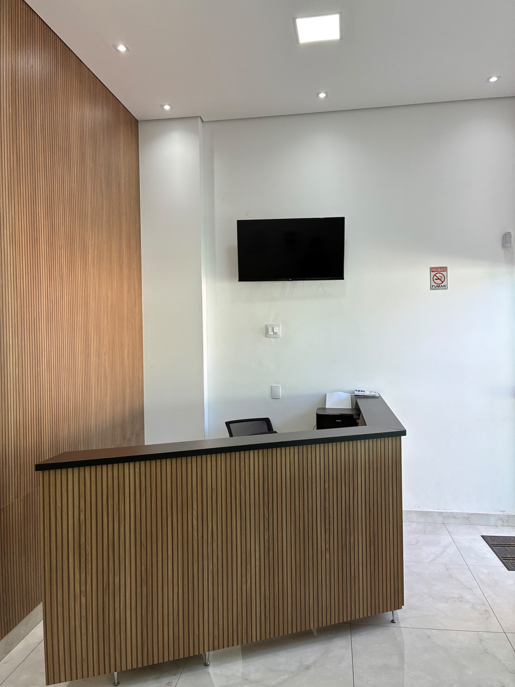

Atendimento individualizado
Cada plano é pensado para o seu caso, sem soluções padronizadas.
Implantodontia • Ortodontia • Clínica geral
Atendimento odontológico individual, com explicações claras e planejamento para quem perdeu um ou mais dentes e deseja entender as possibilidades de tratamento.
Clareza em cada etapa.
Decisões tomadas com calma.
Cuidado pensado para cada pessoa.
O profissional
Cirurgião-dentista com atuação em implantodontia e ortodontia.
O atendimento é conduzido com planejamento, linguagem simples e atenção às particularidades de cada paciente, especialmente para quem chega com dúvidas, receios ou uma história longa com a saúde bucal. O foco é sempre entender o caso antes de indicar qualquer tratamento, respeitando o tempo de decisão de cada pessoa.
Por que escolher esse acompanhamento
Cada ponto abaixo reflete como o atendimento é conduzido no dia a dia do consultório — sem promessas de resultado, com clareza sobre o que esperar em cada etapa.
Cada plano é pensado para o seu caso, sem soluções padronizadas.
Você entende o que será feito, por quê e quais são as alternativas, antes de decidir.
Foco dedicado a devolver função e conforto para quem perdeu dentes.
Retornos e orientações após o tratamento, para acompanhar sua evolução.
Estrutura pensada para o seu conforto, do agendamento ao atendimento.
Tempo para tirar dúvidas e se sentir seguro antes de qualquer procedimento.
Áreas de atendimento
Três frentes de atuação, sempre com avaliação individual antes de qualquer indicação. Toque em cada card para entender melhor.
Foco de atendimento
Planejamento para reposição de dentes, considerando diagnóstico, estrutura óssea, saúde bucal e necessidades individuais.
Alinhamento e mordida
Avaliação da posição dos dentes e da mordida para definir um tratamento compatível com cada fase da vida.
Prevenção e cuidado
Avaliação odontológica, prevenção e acompanhamento da saúde bucal com orientações claras para cada necessidade.
Como funciona
Sem pressa para decidir e sem respostas prontas. Cada etapa existe para que você entenda o tratamento e participe das escolhas.
Escuta das necessidades, histórico de saúde e exame clínico inicial.
Análise do caso, dos exames necessários e das possibilidades de cuidado.
Orientações sobre etapas, limites, cuidados e expectativas para o seu caso.
Retornos e orientações para acompanhar a evolução e a saúde bucal.
Atendimento em Alfenas
O consultório do Dr. Gutto Jordão Vilhena fica na Rua Martins Alfenas, 1918, em Alfenas-MG. O site reúne as informações principais para quem procura atendimento odontológico na cidade e deseja iniciar o contato com clareza.

Avaliação clínica para entender possibilidades, limites e próximos passos.
Orientação sobre alinhamento dentário, mordida e planejamento do tratamento.
Prevenção, avaliação inicial e acompanhamento da saúde bucal.
Dúvidas frequentes
O contato inicial pode ser feito pelo WhatsApp do consultório. A equipe orienta sobre disponibilidade e próximos passos para o agendamento.
O procedimento é realizado com anestesia local e o desconforto costuma ser controlado durante o atendimento. As sensações no pós-operatório variam de pessoa para pessoa e são explicadas durante o planejamento.
O tempo varia de acordo com o caso, o tipo de implante indicado e a condição óssea de cada paciente. Esses prazos são explicados durante a avaliação e o planejamento.
O valor depende do plano definido após a avaliação clínica, já que cada caso tem necessidades diferentes. Os valores são apresentados com transparência durante o planejamento.
Sim, o consultório oferece opções de parcelamento. As condições são combinadas durante a avaliação, de acordo com o tratamento indicado para o seu caso.
A indicação depende de avaliação clínica, exames e planejamento individual. Por isso, a primeira consulta serve para entender o caso com cuidado.
O atendimento acontece na Rua Martins Alfenas, 1918, Centro, Alfenas-MG, CEP 37132-032. O site também oferece um botão direto para abrir a rota.
Primeiro passo
Envie uma mensagem para solicitar uma avaliação. Você poderá explicar sua necessidade e receber a orientação inicial para o agendamento — sem compromisso.
Chamar no WhatsAppAtendimento pelo WhatsApp: +55 35 99133-8862